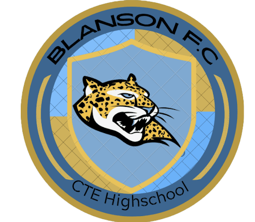
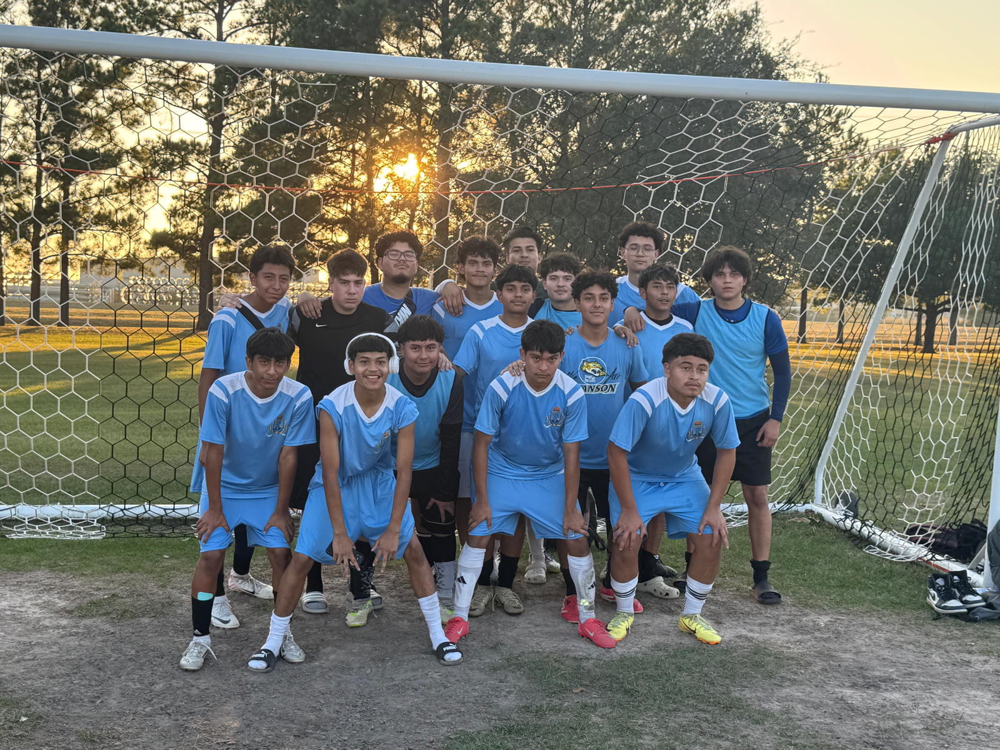

Blanson F.C. Beats Avalos 3-0

In Blanson's first-ever soccer game in school history, the team secured a decisive 3--0 victory over Avalos P-TECH.
Goal 1: Mario Flores
Post Game Interview with Mario Flores
"You've just become the first player to ever score a goal for Blanson--how does it feel to make history?"
It's perfect! There's a lot more to come in the future and we could do way better.
"How do you feel about Blanson's performance against Avalos?"
Yeah, it was a pretty good performance. We did touching and techniques and everything, and we had to thank our coaches because they gave us all this training. And they dedicated their time after school for us.
"Are there any things you think we need to improve on as part of the Blanson team?"
Yes, we need to communicate more and learn each other's positions better
Goal 2: Miguel "Migi" Aguinaga. Assist: Mario Flores
Post Game Interview with Miguel "Migi" Aguinaga
"How do you feel about the victory we had over Avalos this past Saturday?"
I felt good. You know, it's our first game. Many more to come.
It seemed pretty good, obviously there's things we can still improve on but pretty good.
"How do you feel about being one of the players to score on the first ever Blanson soccer game?"
I felt good, you know, I didn't expect it, but I'll score many more.
Goal 3: Own Goal

Filed under Soccer, Blanson F.C.